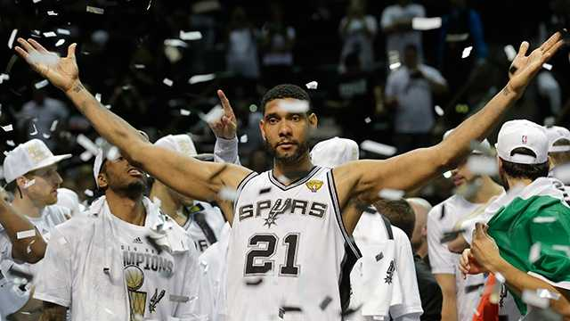

Tim Duncan "The Big Fundamental"

"Good, better, best. Never let it rest. Until your good is better and your better is best." - Tim Duncan
Tim Duncan's Career
Early Years and Spurs Dynasty
- 1997 NBA Draft: 1st overall pick by the San Antonio Spurs.
- Rookie of the Year: 1998, immediately making an impact in the league.
- Championship Success: Integral part of the Spurs' five NBA championships (1999, 2003, 2005, 2007, 2014).
Defensive Dominance and Leadership
- Defensive Player: Known for his strong defensive skills, 15-time NBA All-Defensive Team.
- Consistency and Poise: Lauded for his consistent performance and leadership during critical games.
- MVP Awards: Two-time NBA MVP (2002, 2003).
Retirement and Legacy
- Steady Career: Retired in 2016 after 19 seasons with the Spurs.
- All-Star Appearances: 15-time NBA All-Star.
- Hall of Fame: Inducted into the Naismith Memorial Basketball Hall of Fame in 2020.
Duncan's Legacy
Tim Duncan's career is a testament to the effectiveness of fundamental basketball skills, quiet leadership, and sportsmanship. His legacy as a cornerstone of the Spurs dynasty is firmly established in NBA history.